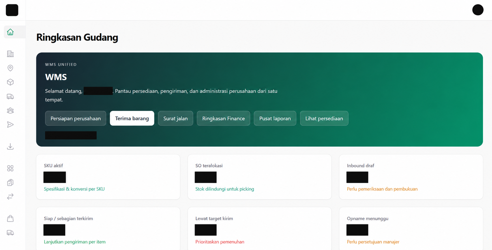
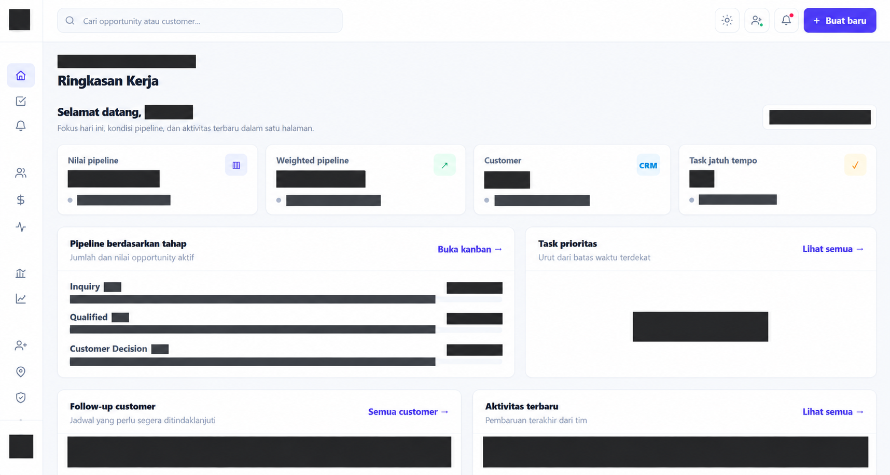
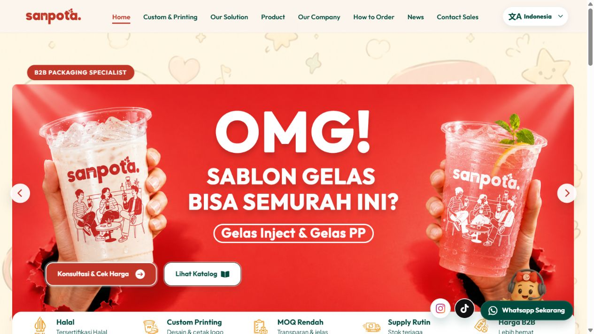
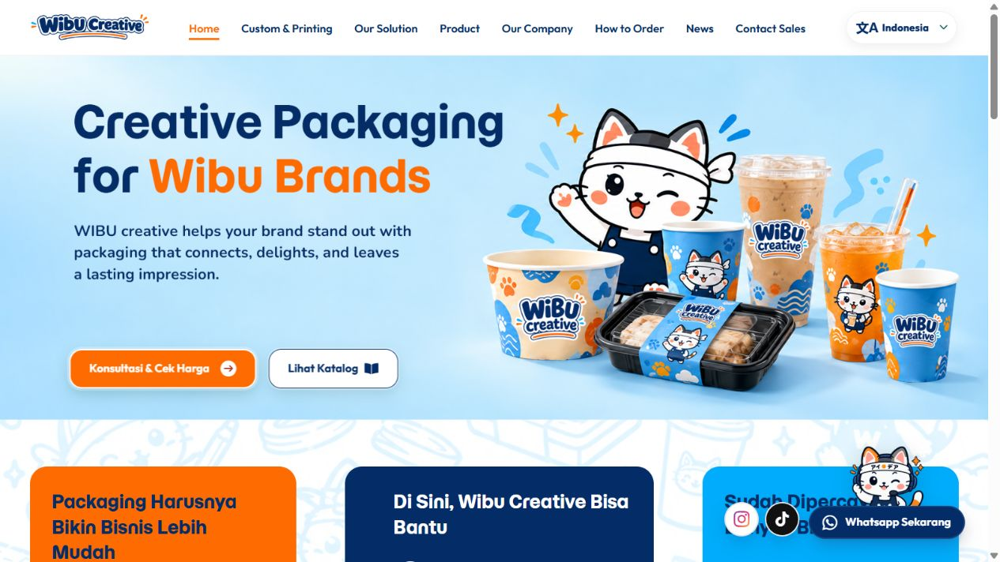
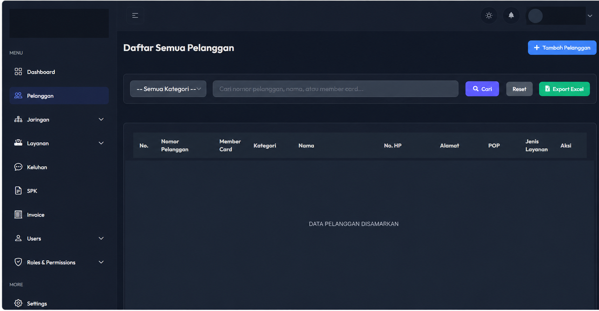
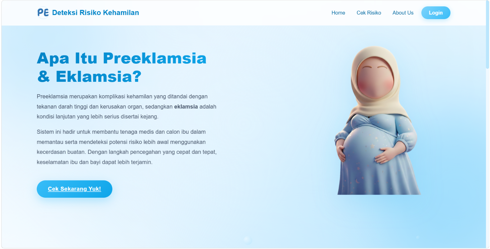
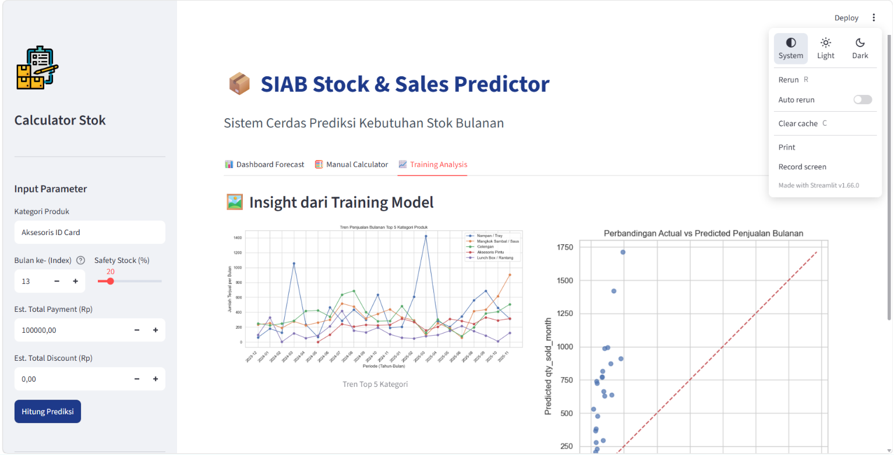
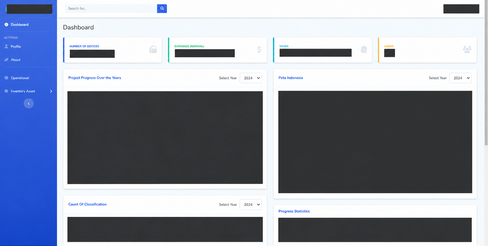

● ● ●Warehouse Management System↗

WAREHOUSE / INVENTORY MANAGEMENT01
Mengembangkan sistem manajemen gudang berbasis web untuk memantau persediaan, penerimaan barang, alokasi sales order, pengiriman, dan stock opname. Dashboard terpusat menyediakan akses ke surat jalan, ringkasan keuangan, dan laporan untuk mendukung operasional gudang.
Inventory & SKUPenerimaan barangAlokasi sales orderSurat jalanStock opnameLaporan
Buka aplikasi ↗Pratinjau disamarkan untuk menjaga kerahasiaan data perusahaan.
● ● ●CRM & Task Management↗

BUSINESS MANAGEMENT / MULTI-TENANT02
Mengembangkan sistem manajemen bisnis berbasis web dengan arsitektur multi-tenant, pelacakan aktivitas, manajemen tugas, alur persetujuan, notifikasi, dan kontrol akses berbasis peran (RBAC) untuk menyederhanakan operasional internal.
Multi-tenantActivity trackingTask managementApproval workflowNotifikasiRBAC
Buka aplikasi ↗Pratinjau disamarkan untuk menjaga kerahasiaan data perusahaan. Akses aplikasi memerlukan otorisasi.
● ● ●sanpota.id↗

B2B PACKAGING / COMPANY WEBSITE03
Website supplier packaging B2B dengan katalog produk, layanan custom printing, informasi solusi kemasan, dan formulir konsultasi bisnis.
Kunjungi website ↗
● ● ●wibucreative.com↗

CUSTOM PACKAGING / COMPANY WEBSITE04
Website kemasan dan custom printing yang menampilkan produk, solusi untuk berbagai jenis bisnis, alur pemesanan, dan akses konsultasi pelanggan.
Kunjungi website ↗
● ● ●Customer Care & Billing System↗

FULLSTACK / LARAVEL05
Revitalisasi customer care & billing, dari frontend dan backend hingga deployment server produksi.
Logo, identitas akun, dan seluruh data pelanggan pada pratinjau telah disamarkan.
● ● ●Deteksi Risiko Kehamilan↗

PYTHON / DJANGO / RANDOM FOREST06
Integrasi data klinis dan model machine learning dalam aplikasi web untuk penelitian prediksi risiko.
Lihat aplikasi ↗
07 / WELLNESS PLATFORMrichwellnessA little space to feel better.
VISUAL CONCEPT↗FULLSTACK / LARAVEL07
Pengembangan fitur utama dan wireframe aplikasi dalam proyek kolaboratif perkuliahan.
● ● ●SIAB Stock & Sales Predictor↗

PYTHON / STREAMLIT / REGRESI LINIER08
Data transaksi menjadi prediksi kebutuhan stok bulanan, dilengkapi kalkulator stok, visualisasi tren penjualan, dan analisis hasil pelatihan model melalui dashboard Streamlit.
● ● ●Dashboard PT Aino Indonesia▥

FULLSTACK / LARAVEL09
Dashboard PT Aino Indonesia
Dashboard perusahaan dengan visualisasi grafik, peta interaktif, dan optimisasi performa sistem.
PROYEK PERUSAHAANIdentitas, nominal, grafik, dan lokasi operasional pada pratinjau telah disamarkan.
VISUAL KONSEP · AI
MOBILE / KOTLIN10
Sistem Kontrol Lampu Pintar
Aplikasi mobile untuk mengatur lampu dari jarak jauh dan mendukung otomatisasi pencahayaan.
MOBILE APPLICATION